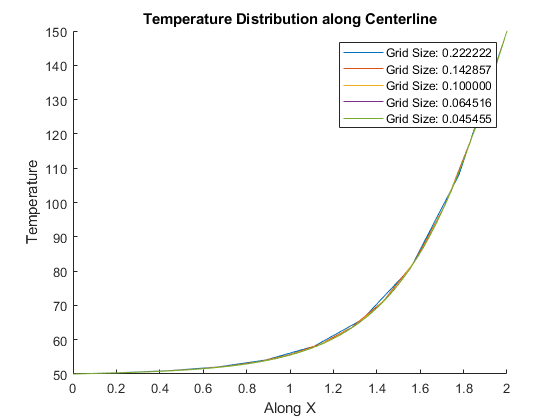
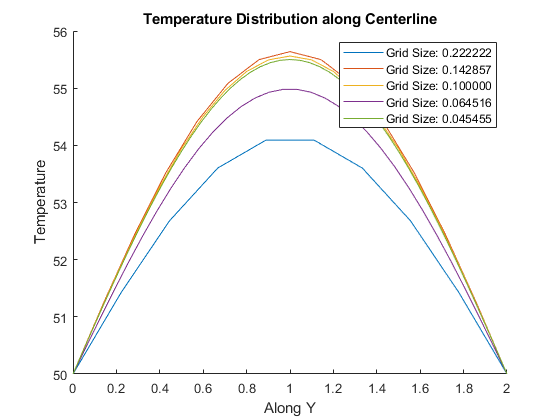

% Abhishek Ghosh % ME21BTECH11001 % Given Parameters alpha = 9.7e-5; T_init = 30; T_1 = 50; T_2 = 150; L = 2; % length B = 1; % breadth nx = 31; ny = 31; x = linspace(0, L, nx); y = linspace(0, B, ny); dy = x(2) - x(1); dx = y(2) - y(1); % To find the maximum permissible time step, as per above set parameters max_time = 10000; delta_t = 0.5 / (alpha * ((1 / dx^2) + (1 / dy^2))); disp(delta_t); % % Explicit % T_e = ones(nx, ny); % % % Imposing Initial Conditions % T_e = T_init * T_e; % % % Initializing Boundary Conditions % T_e(1, :) = T_1; % T_e(:, 1) = T_1; % T_e(:, ny) = T_1; % T_e(nx, :) = T_2; % % t = 0.0; % time, initially it is 0 % dt = 4.57; % time step % % rx = alpha * dt / (dx^2); % ry = alpha * dt / (dy^2); % % T_e_old = T_e; % % iteration = 0; % time_intervals = 200; % % while t <= max_time % for i = 2:nx-1 % for j = 2:ny-1 % T_e(i, j) = rx * (T_e_old(i+1, j) + T_e_old(i-1, j)) + (1 - 2*rx - 2*ry) * T_e_old(i, j) + ry * (T_e_old(i, j+1) + T_e_old(i, j-1)); % end % end % % t = t + dt; % T_e_old = T_e; % % iteration = iteration + 1; % % % Plotting at specific time intervals % if mod(iteration, time_intervals) == 0 % disp(['Number of iterations in Explicit Method: ', num2str(iteration)]); % [X, Y] = meshgrid(x, y); % figure; % contourf(X, Y, T_e, 'LineColor', 'none'); % colorbar(); % title(['Temperature distribution with time (Explicit), t = ', num2str(t), ' units']); % xlabel('Along X'); % ylabel('Along Y'); % axis equal; % grid on; % end % end % % disp(['Number of iterations in Explicit Method: ', num2str(iteration)]); % % Implicit Scheme % t = 0.0; % dt = 10; % Since Implicit Scheme is Unconditionally Stable, we can use any time step % Tolerance = 1e-5; % % rx = alpha * dt / (dx^2); % ry = alpha * dt / (dy^2); % % T_i = ones(nx, ny) * T_init; % % % Initializing Boundary Conditions % T_i(1, :) = T_1; % T_i(:, 1) = T_1; % T_i(:, ny) = T_1; % T_i(nx, :) = T_2; % % T_i_old = T_i; % T_prev = T_i; % % iteration_count = 0; % time_intervals = 100; % % while t <= max_time % Error = 1; % % while Error > Tolerance % for i = 2:nx-1 % for j = 2:ny-1 % T_i(i, j) = (T_prev(i,j) + rx*(T_i(i-1, j) + T_i(i+1, j)) + ry*(T_i(i, j-1) + T_i(i, j+1))) / (1 + 2*rx + 2*ry); % end % end % % Error = max(max(abs(T_i - T_i_old))); % T_i_old = T_i; % % iteration_count = iteration_count + 1; % end % % if max(max(abs(T_i - T_prev))) < Tolerance % break; % end % % T_prev = T_i; % t = t + dt; % % % Plotting at specific time intervals % if mod(iteration_count, time_intervals) == 0 % disp(['Number of iterations in Implicit Method: ', num2str(iteration_count)]); % [X, Y] = meshgrid(x, y); % figure; % contourf(X, Y, T_i, 'LineColor', 'none'); % colorbar(); % title(['Temperature distribution with time (Implicit), t = ', num2str(t), ' units']); % xlabel('Along X'); % ylabel('Along Y'); % axis equal; % grid on; % end % end % % disp(['Number of total iterations in Implicit Method: ', num2str(iteration_count)]); % % CN Method % T_CN = ones(nx, ny); % % t = 0.0; % dt = 1.0; % % rx = alpha * dt / (dx^2); % ry = alpha * dt / (dy^2); % % T_CN = T_CN * T_init; % % % Initializing Boundary Conditions % T_CN(1, :) = T_1; % T_CN(:, 1) = T_1; % T_CN(:, ny) = T_1; % T_CN(nx, :) = T_2; % % T_CN_old = T_CN; % % iteration_count = 0; % time_intervals = 1000; % % while t <= max_time % a = (1 + ry + rx); % b = 0.5 * ry; % c = 0.5 * ry; % T0 = T_1; % Tn = T_1; % % for i = 2:nx-1 % d = zeros(1, ny); % for j = 2:ny-1 % term1 = 0.5 * rx * (T_CN_old(i-1, j) - 2*T_CN_old(i, j) + T_CN_old(i+1, j)); % term2 = 0.5 * ry * (T_CN_old(i, j-1) - 2*T_CN_old(i, j) + T_CN_old(i, j+1)); % term3 = 0.5 * rx * (T_CN(i-1, j) + T_CN(i+1, j)); % d(j) = term1 + term2 + term3 + T_CN_old(i, j); % end % % T_CN(i, :) = Thomas_algo(a, b, c, d, T0, Tn, ny); % end % % if max(max(abs(T_CN - T_CN_old))) < Tolerance % disp('Steady State Reached'); % break; % end % % t = t + dt; % T_CN_old = T_CN; % % iteration_count = iteration_count + 1; % % % Plotting at specific time intervals % if mod(iteration_count, time_intervals) == 0 % disp(['Number of iterations in CN Method: ', num2str(iteration_count)]); % [X, Y] = meshgrid(x, y); % figure; % contourf(X, Y, T_CN, 'LineColor', 'none'); % colorbar(); % title(['Temperature distribution with time (Crank-Nicolson), t = ', num2str(t), ' units']); % xlabel('Along X'); % ylabel('Along Y'); % axis equal; % grid on; % end % end % % disp(['Number of total iterations in CN Method: ', num2str(iteration_count)]); % ADI % t = 0.0; % dt = 8; % % rx = alpha * dt / (dx^2); % ry = alpha * dt / (dy^2); % % T_adt = ones(nx, ny) * T_init; % % % Initializing Boundary Conditions % T_adt(1, :) = T_1; % T_adt(:, 1) = T_1; % T_adt(:, ny) = T_1; % T_adt(nx, :) = T_2; % % T_adt_old = T_adt; % iteration_count = 0; % time_intervals = 200; % % while t <= max_time % Temp = T_adt_old; % % % Sweeping in X - Direction % a = (1 + ry); % b = 0.5 * ry; % c = 0.5 * ry; % % T0 = T_1; % Tn = T_1; % % for i = 2:nx-1 % d = zeros(1, ny); % for j = 2:ny-1 % d(j) = 0.5 * rx * T_adt_old(i-1, j) + (1 - rx) * T_adt_old(i, j) + 0.5 * rx * T_adt_old(i+1, j); % end % % Temp(i, :) = Thomas_algo(a, b, c, d, T0, Tn, ny); % end % % T_adt = Temp; % % % Sweeping in Y Direction % a = 1 + rx; % b = 0.5 * rx; % c = 0.5 * rx; % % T0 = T_1; % Tn = T_2; % % for j = 2:ny-1 % d = zeros(1, nx); % for i = 2:nx-1 % d(i) = 0.5 * ry * Temp(i, j-1) + (1 - ry) * Temp(i, j) + 0.5 * ry * Temp(i, j+1); % end % % T_adt(:, j) = Thomas_algo(a, b, c, d, T0, Tn, nx); % end % % if max(max(abs(T_adt - T_adt_old))) < Tolerance % disp('Steady State Reached'); % break; % end % % t = t + dt; % T_adt_old = T_adt; % iteration_count = iteration_count + 1; % % % Plotting at specific time intervals % if mod(iteration_count, time_intervals) == 0 % disp(['Number of iterations in ADI Method: ', num2str(iteration_count)]); % [X, Y] = meshgrid(x, y); % figure; % contourf(X, Y, T_adt, 10, 'LineColor', 'none'); % colorbar(); % title(['Temperature distribution with time (ADI Method), t = ', num2str(t), ' units']); % xlabel('Along X'); % ylabel('Along Y'); % axis equal; % grid on; % end % end % % disp(['Number of total iterations in ADI Method: ', num2str(iteration_count)]); % Mesh independance % Grid Independence Test for Implicit Scheme % Different grid sizes to test grid_points = [10, 15, 21, 32, 45]; figure; hold on; for g = grid_points x_t = linspace(0, L, g); y_t = linspace(0, B, g); dx = x_t(2) - x_t(1); dy = y_t(2) - y_t(1); T = implicit(g); T_plot = T(:, round(g/2)); % Corrected indexing plot(x_t, T_plot, 'DisplayName', sprintf('Grid Size: %.6f', x_t(2) - x_t(1))); end hold off; title('Temperature Distribution along Centerline'); xlabel('Along X'); ylabel('Temperature'); legend; figure; hold on; for g = grid_points x_t = linspace(0, L, g); y_t = linspace(0, B, g); dx = x_t(2) - x_t(1); dy = y_t(2) - y_t(1); T = implicit(g); T_plot = T( round(g/2),:); % Corrected indexing plot(x_t, T_plot, 'DisplayName', sprintf('Grid Size: %.6f', x_t(2) - x_t(1))); end hold off; title('Temperature Distribution along Centerline'); xlabel('Along Y'); ylabel('Temperature'); legend; function T_i = implicit(grid_size) alpha = 9.7e-5; T_init = 30; T_1 = 50; T_2 = 150; L = 2; % length B = 1; % breadth % Initialize grid and parameters based on the grid size nx = grid_size; ny = grid_size; dx = L / (nx - 1); dy = B / (ny - 1); % Initialize temperature field and boundary conditions T_i = ones(nx, ny) * T_init; T_i(1, :) = T_1; T_i(:, 1) = T_1; T_i(:, ny) = T_1; T_i(nx, :) = T_2; max_time = 10000; T_i_old = T_i; t = 0.0; dt = 10; % Adjust the time step as needed Tolerance = 1e-5; rx = alpha * dt / (dx^2); ry = alpha * dt / (dy^2); iteration_count = 0; % Perform the implicit scheme simulation while t <= max_time Error = 1; while Error > Tolerance for i = 2:nx-1 for j = 2:ny-1 T_i(i, j) = (T_i_old(i, j) + rx * (T_i(i-1, j) + T_i(i+1, j)) + ry * (T_i(i, j-1) + T_i(i, j+1))) / (1 + 2 * rx + 2 * ry); end end Error = max(max(abs(T_i - T_i_old))); T_i_old = T_i; iteration_count = iteration_count + 1; end if max(max(abs(T_i - T_i_old))) < Tolerance break; end t = t + dt; T_i_old = T_i; end end % TDMA Function function T_tdma = Thomas_algo(a, b, c, d, T0, Tn, n) T_tdma = zeros(1, n); T_tdma(1) = T0; T_tdma(n) = Tn; P = zeros(1, n); Q = zeros(1, n); P(1) = 0; Q(1) = T0; for i = 2:n P(i) = b / (a - c * P(i-1)); Q(i) = (d(i) + c * Q(i-1)) / (a - c * P(i-1)); end Q(n) = Tn; for i = n-1:-1:1 T_tdma(i) = T_tdma(i+1) * P(i) + Q(i); end end
4.5819 